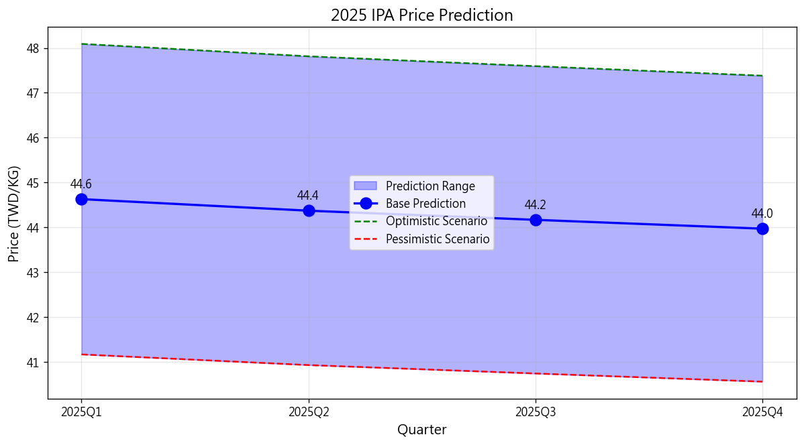

Forecast Year: 2025 | Generated: 2026-02-22 09:31
Base Mean: 44.29 TWD/KG
Optimistic Mean: 47.72 TWD/KG
Pessimistic Mean: 40.85 TWD/KG
| Quarter | Base | Optimistic | Pessimistic |
|---|---|---|---|
| 2025Q1 | 44.63 | 48.09 | 41.17 |
| 2025Q2 | 44.37 | 47.81 | 40.93 |
| 2025Q3 | 44.17 | 47.59 | 40.74 |
| 2025Q4 | 43.97 | 47.38 | 40.56 |


Disclaimer: prediction is for reference only.